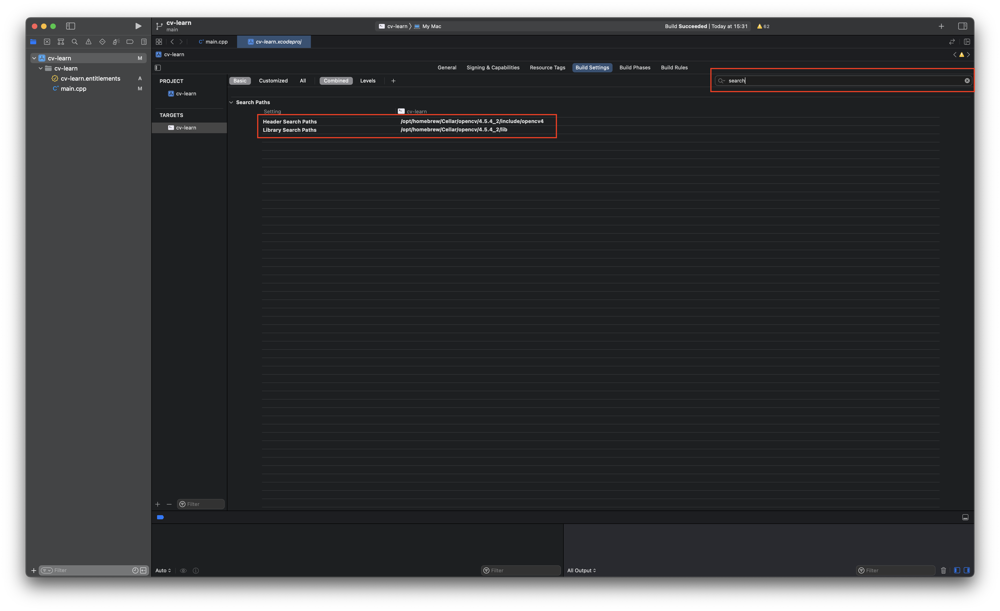
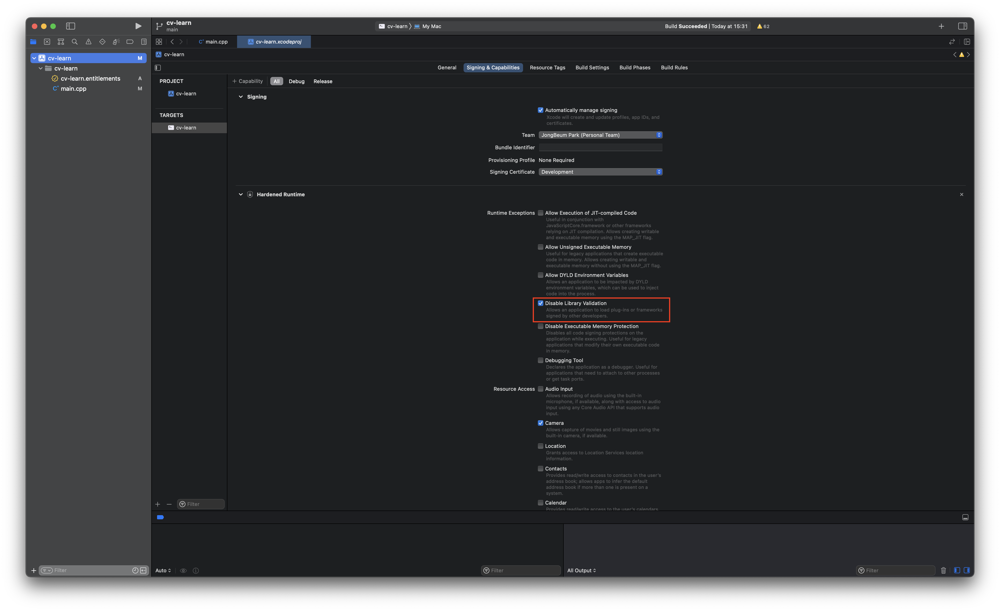

OpenCV 설치
brew install opencvDependency들 많아서 조금 걸림
OpenCV Library & Header 추가
Header & Library 추가

Targets - Build Settings에서 다음과 같이 설정
| Setting | 경로 |
|---|---|
| Library Search Path | /opt/homebrew/Cellar/opencv/버전명/lib |
| Header Search Path | /opt/homebrew/Cellar/opencv/버전명/include/opencv4 |
Disable Library Validation
 Disable Library Validation 항목 체크해줄것 이거 안하면 라이브러리 못불러온다고 에러남
카메라 쓰면 그 밑에 Resource Access에서 Camera도 켜줄것!!
Info.plist만들고 할 필요 없습니다
OpenCV pkg-config 플래그 확인 & 추가
$ pkg-config --cflags --libs /opt/homebrew/Cellar/opencv/버전명/lib/pkgconfig/opencv4.pc전 이렇게 나왔음
-I/opt/homebrew/opt/opencv/include/opencv4 -L/opt/homebrew/opt/opencv/lib -lopencv_gapi -lopencv_stitching -lopencv_alphamat -lopencv_aruco -lopencv_barcode -lopencv_bgsegm -lopencv_bioinspired -lopencv_ccalib -lopencv_dnn_objdetect -lopencv_dnn_superres -lopencv_dpm -lopencv_face -lopencv_freetype -lopencv_fuzzy -lopencv_hfs -lopencv_img_hash -lopencv_intensity_transform -lopencv_line_descriptor -lopencv_mcc -lopencv_quality -lopencv_rapid -lopencv_reg -lopencv_rgbd -lopencv_saliency -lopencv_sfm -lopencv_stereo -lopencv_structured_light -lopencv_phase_unwrapping -lopencv_superres -lopencv_optflow -lopencv_surface_matching -lopencv_tracking -lopencv_highgui -lopencv_datasets -lopencv_text -lopencv_plot -lopencv_videostab -lopencv_videoio -lopencv_viz -lopencv_wechat_qrcode -lopencv_xfeatures2d -lopencv_shape -lopencv_ml -lopencv_ximgproc -lopencv_video -lopencv_xobjdetect -lopencv_objdetect -lopencv_calib3d -lopencv_imgcodecs -lopencv_features2d -lopencv_dnn -lopencv_flann -lopencv_xphoto -lopencv_photo -lopencv_imgproc -lopencv_core
| Setting | 경로 |
|---|---|
| Other Linker Flags | 위에 저거 복붙하기 |
Test
코드는 https://docs.opencv.org/4.x/d8/dfe/classcv_1_1VideoCapture.html 에서 베껴옴 devideID는 적당히 바꿔가면서 올바르게 넣어보도록 한다 전 1번 나옴
#include <opencv2/core.hpp>
#include <opencv2/videoio.hpp>
#include <opencv2/highgui.hpp>
#include <iostream>
using namespace cv;
using namespace std;
int main(int, char**)
{
Mat frame;
//--- INITIALIZE VIDEOCAPTURE
VideoCapture cap;
// open the default camera using default API
// cap.open(0);
// OR advance usage: select any API backend
int deviceID = 1; // 0 = open default camera
int apiID = CAP_ANY; // 0 = autodetect default API
// open selected camera using selected API
cap.open(deviceID, apiID);
// check if we succeeded
if (!cap.isOpened()) {
cerr << "ERROR! Unable to open camera\n";
return -1;
}
//--- GRAB AND WRITE LOOP
cout << "Start grabbing" << endl
<< "Press any key to terminate" << endl;
for (;;)
{
// wait for a new frame from camera and store it into 'frame'
cap.read(frame);
// check if we succeeded
if (frame.empty()) {
cerr << "ERROR! blank frame grabbed\n";
break;
}
// show live and wait for a key with timeout long enough to show images
imshow("Live", frame);
if (waitKey(5) >= 0)
break;
}
// the camera will be deinitialized automatically in VideoCapture destructor
return 0;
}
잘된다!